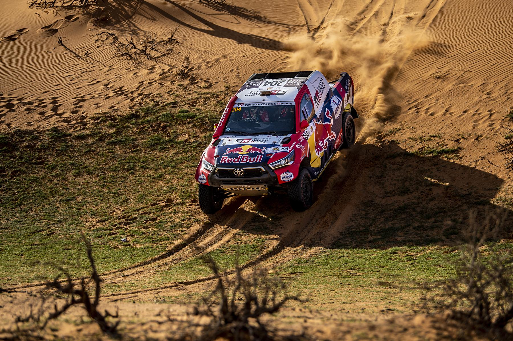
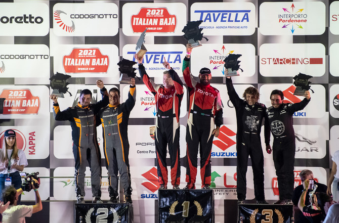
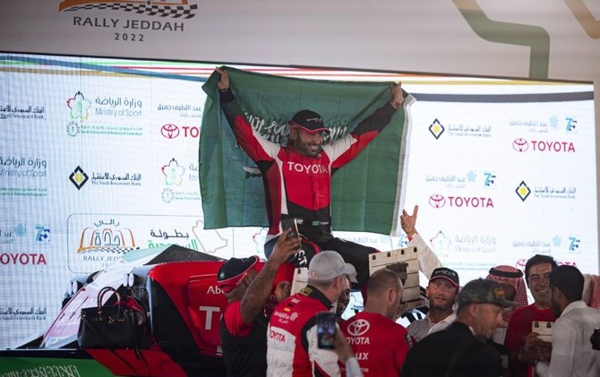

Dakar Rally
Yazeed Mohamed Al-Rajhi has been a regular participant in the Dakar Rally since his debut in 2015. He achieved notable finishes, including top positions in several stages, showcasing his skill and determination in one of the toughest rally races in the world.
FIA World Cup for Cross-Country Rallies
Yazeed won the FIA World Cup for Cross-Country Rallies in 2021 and 2022. These victories marked him as one of the prominent figures in international rally racing.
Saudi Toyota Championship
As a dominant competitor on the local circuit, Yazeed clinched the Saudi Toyota Championship titles in 2019 and 2022. His performances have greatly contributed to his fame and respect in the national racing community.
